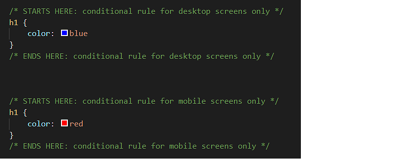
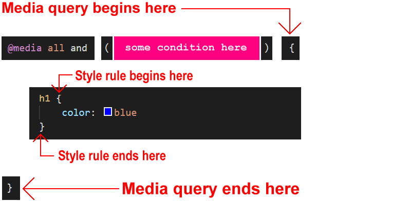
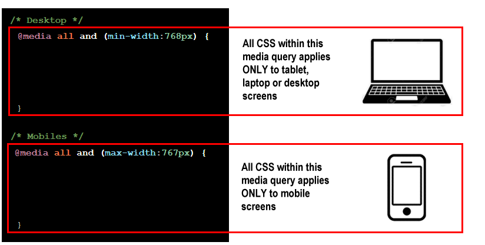
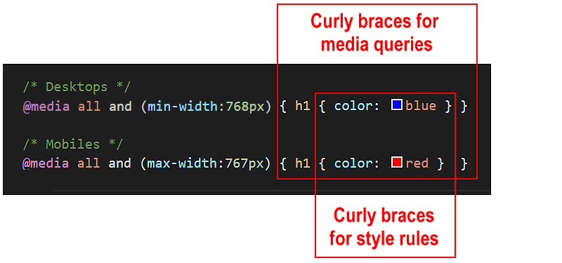

Learning Goals
At the end of this Tutorial you will be able to:
- Add media queries to a CSS file for the 768px breakpoint.
- Use media queries to create responsive container padding and inter-line text spacing on a web page.
You can view finished versions of the three sample web pages you will update with media queries in this Tutorial by clicking the links below. The finished samples will each open in a new tab of your web browser.
You created these three sample web pages and their linked stylesheets in the previous Working with Sections Tutorial.
About media queries
In the CSS stylesheets you have created so far, the style rules they contain apply to all web pages these CSS files are linked to.
This will be true for every type of device used – mobiles, tablets, laptops or desktops.
Consider the example below of an h1 main heading. If you simply entered this style rule to a CSS file, all main headings are displayed in the colour blue on all types of user devices.
h1 {
color: blue;
}
So-called media queries enable web designers to create conditional style rules in CSS.
That is: style rules that apply only when certain conditions are met.
Suppose, for example:
- You would like your main headings to display in the colour blue on laptops and desktops, and also on Apple iPad tablets (in landscape mode).
h1 {
color: blue;
}
In other words, you want blue headings on ‘big’ screens.
- On mobiles, however, and also on Apple iPad tablets (in portrait mode), you would like your main headings to display in the colour red.
h1 {
color: red;
}
In other words, you want red headings on ‘small’ screens.
How can this be done?
The solution is to use two media queries.
In simple terms, you would:
- Enter both style rules in the CSS file: one rule for ‘big’ screens, and the other rule for ‘small’ screens.
- Include with each style rule a condition statement that tells the web browser: only apply this style if the user’s viewport (screen) is less than or greater than a certain width.

Note that all media queries have both a start point and an end point.
It is not enough to ‘open’ them. You must also ‘close’ them.
If you fail to close a media query, all the style rules that follow it in the remainder of the CSS file – which could be many hundreds of lines long – will be controlled by the unclosed media query.
In CSS, a media is written in the following general format:

Note that there are now two pairs of curly braces:
- An inner pair of opening and closing curly braces encloses the style rules(s) for the CSS selector, in this case, h1.
- And an outer pair of opening and closing curly braces that encloses the media query.
Web designers most commonly use media queries that respond to the width of the web browser viewport (screen).
In simple terms, viewport widths are either ‘big’ (wide) or ‘small’ (narrow).
- Big viewports: These are viewports that are 768 pixels wide or wider.
In other words, viewports with a min-width value of 768px.
- Small viewports: These are viewports that are 767 pixels wide or narrower.
In other words, viewports with a max-width value of 767px.
You can now write two media queries in their full, valid format:
@media (min-width: 768px) {
h1 { color: blue }
}
@media (max-width: 767px) {
h1 { color: red }
}
In this example, the media query for desktop screens is entered first in the CSS file, followed by the media query for mobile screens. But the order in which media queries appear in a stylesheet does not matter.

Below are the same two media queries, but with the style rule for the h1 selectors written on a single line.

Again, note the two pairs of opening and closing curly braces.
When using the media queries to control the spacing around and within HTML elements, it is best to update the web browser resets in your stylesheet file as follows:
* { margin: 0; padding: 0; border: 0; box-sizing: border-box }
html { height: 100% }
body { min-height: 100% }
img { width: 100%; height: auto; display: block }
This has to do with setting percentage values for horizontal and vertical widths:
To avoid this possible conflict of ‘how high is height?’, web designers add 100% height values to browser resets at the top of CSS files.
Editing your three sample stylesheets
Follow these steps to update the stylesheet files for your recent sample web pages (page-10.html, page-11.html and page-12.html) so that they display responsively on different viewport widths.
You created these sample web pages in a previous Tutorial.
- In VS Code, open the style-10.css, style-11.css and style-12.css stylesheet files.
- At the top of each stylesheet file, replace the current web browser resets by copying and pasting the following:
* { margin: 0; padding: 0; border: 0; box-sizing: border-box }
html { height: 100% }
body { min-height: 100% }
img { width: 100%; height: auto; display: block }
- For each stylesheet file, replace the current .container-block style rules with the following:
@media (min-width:768px) { .container-block { padding: 4% 18% } }
@media (max-width:767px) { .container-block { padding: 12% 8% } }
- In all three stylesheets you can see that the .container-block selector includes the following style rule that gives the main <h1> heading in your web pages a negative top margin value.
margin-top: -32px;
Delete this rule.
- In all three stylesheets, after the style declaration block for the p paragraph, add these two new media queries that adjust the inter-line spacing for text paragraphs depending on the viewport width:
@media (min-width:768px) { .container-block p { line-height: 1.8 } }
@media (max-width:767px) { .container-block p { line-height: 1.6 } }
- Save the style-10.css, style-11.css and style-12.css stylesheets.
- Use your web browser’s viewport resizing feature to check that the horizontal and vertical spacing of the container blocks in the three web pages changes at the 768px viewport breakpoint.
Click page-10.html, page-11.html and page-12.html to view finished samples of these web pages in a new tab of your web browser.
Uploading your CSS files to GitHub
Upload the following three stylesheet files to your account on GitHub:
style-10.css
style-11.css
style-12.css
Your updated web pages with the fluid font sizes will be published at web addresses similar to the following:
https://username.github.io/page-10.html
https://username.github.io/page-11.html
https://username.github.io/page-12.html
It may take a few minutes for your uploaded files to appear on GitHub.
Return to Contents.